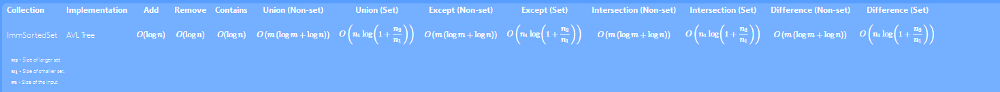
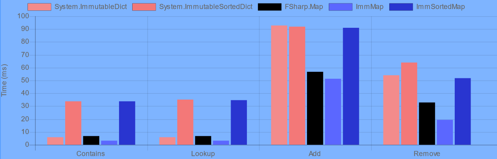
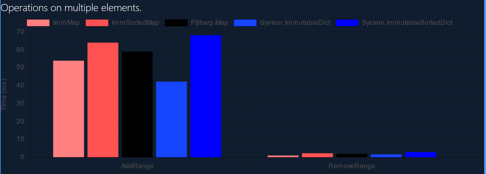

ImmMap is an immutable hash map and the library’s primary map collection. It’s implemented as an AVL tree and uses most of the same code as ImmSet. Keys must normally implement IEquatable<K>, but see more about this here.
It has a sorted variant that uses IComparable<K> and IComparer<K> instead.
Examples
Operations
ImmMap supports a wide variety of highly optimized, key-based operations derived from its set counterpart.
Merge (Union)
This operation merges two maps. It combines their key-value pairs using the key semantics of the current map, returning a map including the key-value pairs of both. A selector can be supplied, which determines the value in case of collision. The function takes the key, the value in the current map, and in the value in the input map. This selector is called the join selector.
Without a selector, the value in the input map is used.
Join (Intersection)
This operation joins two maps. It matches every key in the current map with every key in the input map. You can supply a selector that determines the value in the output. Otherwise, the value in the input map is used. This selector is called the join selector.
Without a selector, the value in the input map is used.
This operation is similar to the LINQ join operator.
Subtract (Except)
This one subtracts the input map from the current map. A selector is applied on all the key-value pairs shared by the two maps. This selector returns an Optional value. If it is Some(v), then the key-value pair is retained with the value v. Otherwise, if it is None, the key-value pair is removed. This selector is called the subtraction selector.
Without a selector, the key-value pair is simply removed.
Difference (Difference)
This method returns a map consisting of all the key-value pairs in exactly one map. No selector can be supplied in this case.
Complexity
Maps have the same complexity bounds as sets: 
Performance

